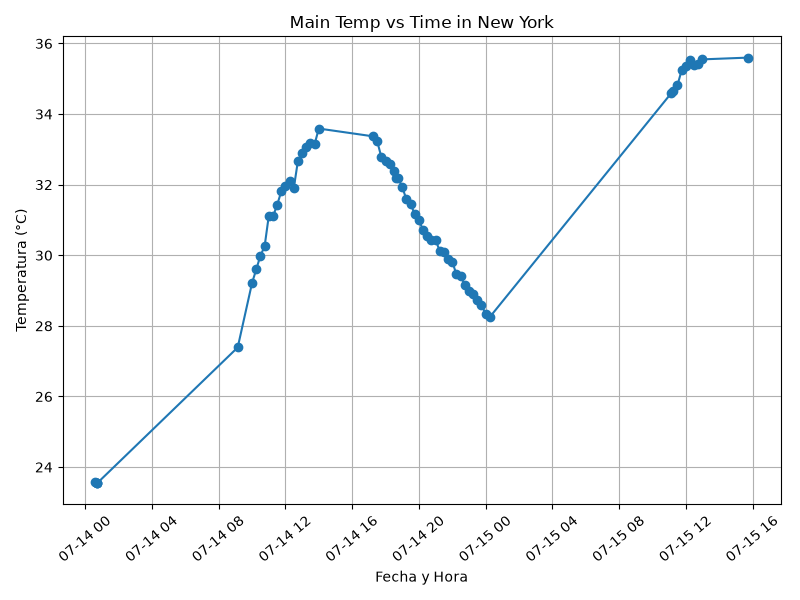
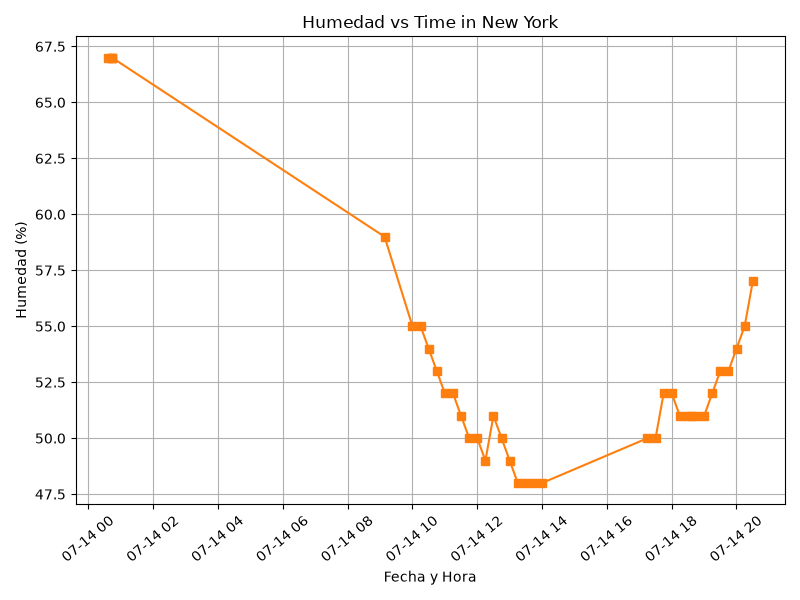

Proyecto ICCD332 Arquitectura de Computadores
1. City Weather APP
Este es el proyecto de fin de semestre en donde se pretende demostrar las destrezas obtenidas durante el transcurso de la asignatura de Arquitectura de Computadores.
- Conocimientos de sistema operativo Linux
- Conocimientos de Emacs/Jupyter
- Configuración de Entorno para Data Science con Mamba/Anaconda
- Literate Programming
1.1. Estructura del proyecto
Se recomienda que el proyecto se cree en el home del sistema operativo i.e. home/<user>. Allí se creará la carpeta CityWeather
cd /home/eareal/Arquitectura-/ProyectoNewYork pwd
/home/eareal/Arquitectura-/ProyectoNewYork
El proyecto ha de tener los siguientes archivos y subdirectorios. Adaptar los nombres de los archivos según las ciudades específicas del grupo.
.
├── CityTemperatureAnalysis.ipynb
├── clima-newyork-hoy.csv
├── get-weather.sh
├── index.org:Zone.Identifier
├── main.py
├── output.log
├── robos-carros-inec.csv
└── weather-site
├── build-site.el
├── build.sh
├── content
│ ├── #index.org#
│ ├── images
│ │ ├── humidity.png
│ │ ├── robos_canton.png
│ │ ├── robos_mensuales.png
│ │ ├── robos_provincia.png
│ │ └── temperature.png
│ ├── index.org
│ ├── page2-js.org
│ └── page3-dashboard.org
└── public
├── images
│ ├── humidity.png
│ ├── robos_canton.png
│ ├── robos_mensuales.png
│ ├── robos_provincia.png
│ └── temperature.png
├── index.html
├── page2-js.html
└── page3-dashboard.html
6 directories, 26 files
Puede usar Emacs para la creación de la estructura de su proyecto
usando comandos desde el bloque de shell. Recuerde ejecutar el bloque
con C-c C-c. Para insertar un bloque nuevo utilice C-c C-, o M-x
org-insert-structure-template. Seleccione la opción s para src y
adapte el bloque según su código tenga un comandos de shell, código de
Python o de Java. En este documento .org dispone de varios ejemplos
funcionales para escribir y presentar el código.
echo 'Aquí va sus comandos'
Aquí va sus comandos
1.2. Formulación del Problema
Se desea realizar un registro climatológico de New York. Para esto, escriba un script de Python/Java que permita obtener datos climatológicos desde el API de openweathermap. El API hace uso de los valores de latitud \(x\) y longitud \(y\) de la ciudad \(\mathcal{C}\) para devolver los valores actuales a un tiempo \(t\).
Los resultados obtenidos de la consulta al API se escriben en un archivo clima-newyork-hoy.csv . Cada ejecución del script debe almacenar nuevos datos en el archivo. Utilice crontab y sus conocimientos de Linux y Programación para obtener datos del API de /openweathermap con una periodicidad de 15 minutos mediante la ejecución de un archivo ejecutable denominado get-weather.sh. Obtenga al menos 50 datos. Verifique los resultados. Todas las operaciones se realizan en Linux o en el WSL. Las etapas del problema se subdividen en:
- Conformar los grupos de 2 estudiantes y definir la ciudad objeto de estudio.
- Crear su API gratuito en openweathermap
- Escribir un script en Python/Java que realice la consulta al API y escriba los resultados en clima-<ciudad>-hoy.csv. El archivo ha de contener toda la información que se obtiene del API en columnas. Se debe observar que los datos sobre lluvia (rain) y nieve (snow) se dan a veces si existe el fenómeno.
Desarrollar un ejecutable get-weather.sh para ejecutar el programa Python/Java.1
cat get-weather.sh
#!/usr/bin/bash # 1 Navegar a la carpeta de tu proyecto cd /home/eareal/Arquitectura-/ProyectoNewYork # 2 Activar el entorno de Anaconda source ~/miniforge3/etc/profile.d/conda.sh conda activate iccd332 # 3 Ejecutar el script de Python python main.py - Configurar Crontab para la adquisición de datos. Escriba el comando configurado. Respalde la ejecución de crontab en un archivo output.log
Realizar la presentación del Trabajo utilizando la generación del sitio web por medio de Emacs. Para esto es necesario crear la carpeta weather-site dentro del proyecto. Puede ajustar el look and feel según sus preferencias. El servidor a usar es el simple-httpd integrado en Emacs que debe ser instalado:
- Usando comandos Emacs:
M-x package-installpresionamos enter (i.e. RET) y escribimos el nombre del paquete: simple-httpd - Configurando el archivo init.el
(use-package simple-httpd :ensure t)
Instrucciones de sobre la creación del sitio web se tiene en el vídeo de instrucciones y en el archivo Org-Website.org en el GitHub del curso
- Usando comandos Emacs:
- Su código debe estar respaldado en GitHub/BitBucket, la dirección será remitida en la contestación de la tarea
1.3. Descripción del código
En esta sección se debe detallar segmentos importantes del código desarrollado así como la estrategia de solución adoptada por el grupo para resolver el problema. Divida su código en unidades funcionales para facilitar su presentación y exposición.
Lectura del API
import requests API_KEY = "c8fb29956631fe51156dd54569038b53" # Aquí va tu clave real LAT = 40.7128 # Latitud de New York LON = -74.0060 # Longitud de New York URL = f"https://api.openweathermap.org/data/2.5/weather?lat={LAT}&lon={LON}&appid={API_KEY}&units=metric" respuesta = requests.get(URL) print(f"Código de respuesta de la API: {respuesta.status_code}")
Puede tener que borrar los dos puntos para que el resultado aparezca en el HTML. En mi caso no fue necesario. Pruebe.
8
Convertir Json a Diccionario de Python
if respuesta.status_code == 200: datos = respuesta.json() temperatura = datos["main"]["temp"] humedad = datos["main"]["humidity"] presion = datos["main"]["pressure"] clima_principal = datos["weather"][0]["main"] print(f"Temp: {temperatura}°C, Humedad: {humedad}%, Clima: {clima_principal}")
Guardar el archivo csv
import csv from datetime import datetime # Obtenemos lluvia y nieve (si no hay, ponemos 0) lluvia_1h = datos.get("rain", {}).get("1h", 0) nieve_1h = datos.get("snow", {}).get("1h", 0) fecha_hora = datetime.now().strftime("%Y-%m-%d %H:%M:%S") linea = [fecha_hora, temperatura, humedad, presion, clima_principal, lluvia_1h, nieve_1h] with open('/home/eareal/Arquitectura-/ProyectoNewYork/clima-newyork-hoy.csv', mode='a', newline='') as archivo: writer = csv.writer(archivo) writer.writerow(linea) print("Datos de New York guardados exitosamente.")
1.4. Script ejecutable sh
Se coloca el contenido del script ejecutable. Recuerde que se debe utilizar el entorno de anaconda/mamba denominado iccd332 para la ejecución de Python; independientemente de que tenga una instalación nativa de Python.
En el caso de los shell script se puede usar `which sh` para conocer la ubicación del ejecutable.
which sh
/usr/bin/sh
De igual manera se requiere localizar el entorno de mamba iccd332 que será utilizado.
which mamba
Con esto, el archivo ejecutable `get-weather.sh` tiene el siguiente código adaptado para la ciudad de New York y nuestro entorno de trabajo:
#!/usr/bin/bash cd /home/eareal/Arquitectura-/ProyectoNewYork source /home/eareal/miniforge3/etc/profile.d/conda.sh eval "$(conda shell.bash hook)" conda activate iccd332 python3 main.py
Finalmente, se le dieron permisos de ejecución al archivo con el siguiente comando, tal como se explicó en clases:
chmod +x get-weather.sh
1.5. Configuración de Crontab
Se indica la configuración realizada en crontab para la adquisición de datos.
*/15 * * * * /home/eareal/Arquitectura-/ProyectoNewYork/get-weather.sh >> /home/eareal/Arquitectura-/ProyectoNewYork/output.log 2>&1
2. Presentación de resultados
Para la pressentación de resultados se utilizan las librerías de Python:
- matplotlib
- pandas
Alternativamente como pudo estudiar en el Jupyter Notebook
CityTemperatureAnalysis.ipynb, existen librerías alternativas que se
pueden utilizar para presentar los resultados gráficos. En ambos
casos, para que funcione los siguientes bloques de código, es
necesario que realice la instalación de los paquetes usando mamba
install <nombre-paquete>
Guardar el archivo csv
import csv from datetime import datetime # Obtenemos lluvia y nieve (si no hay, ponemos 0) lluvia_1h = datos.get("rain", {}).get("1h", 0) nieve_1h = datos.get("snow", {}).get("1h", 0) fecha_hora = datetime.now().strftime("%Y-%m-%d %H:%M:%S") linea = [fecha_hora, temperatura, humedad, presion, clima_principal, lluvia_1h, nieve_1h] # AQUÍ ESTÁ LA RUTA RELATIVA UNIVERSAL with open('../../clima-newyork-hoy.csv', mode='a', newline='') as archivo: writer = csv.writer(archivo) writer.writerow(linea) print("Datos de New York guardados exitosamente.")
2.1. Muestra Aleatoria de datos
Presentar una muestra de 10 valores aleatorios de los datos obtenidos.
| fechahora | temperatura | humedad | presion | climaprincipal | lluvia1h | nieve1h |
|---|---|---|---|---|---|---|
| 2026-07-14 00:43:02 | 23.55 | 67 | 1019 | Clouds | 0 | 0 |
| 2026-07-14 19:30:02 | 31.46 | 53 | 1012 | Clouds | 0 | 0 |
| 2026-07-14 18:00:06 | 32.68 | 52 | 1012 | Clouds | 0 | 0 |
| 2026-07-15 13:00:06 | 35.55 | 46 | 1009 | Clouds | 0 | 0 |
| 2026-07-14 18:45:02 | 32.2 | 51 | 1012 | Clouds | 0 | 0 |
| 2026-07-14 19:15:02 | 31.59 | 52 | 1012 | Clouds | 0 | 0 |
| 2026-07-15 11:45:07 | 35.24 | 44 | 1010 | Clouds | 0 | 0 |
| 2026-07-15 00:15:02 | 28.25 | 67 | 1012 | Clouds | 0 | 0 |
| 2026-07-14 18:30:03 | 32.38 | 51 | 1012 | Clouds | 0 | 0 |
| 2026-07-14 21:15:01 | 30.12 | 58 | 1012 | Clouds | 0 | 0 |
Descripción: Esta tabla presenta una extracción aleatoria de 10 registros meteorológicos obtenidos mediante la API de OpenWeatherMap. Cada fila representa una captura de datos en un instante específico, evidenciando variables clave como la temperatura, humedad, presión atmosférica y el estado general del clima.
2.2. Gráfica Temperatura vs Tiempo
Realizar una gráfica de la Temperatura en el tiempo.

Figura 1: Figura 1: Evolución de la temperatura en New York.
Descripción: Esta gráfica de líneas ilustra la variación térmica en la ciudad de New York. El eje vertical muestra la temperatura en grados Celsius y el eje horizontal representa la línea temporal de la recolección de datos, permitiendo identificar fácilmente los picos máximos y mínimos del clima actual.
2.3. Realice una gráfica de Humedad con respecto al tiempo

Figura 2: Figura 2: Variación de la Humedad relativa en New York.
Descripción: Esta visualización refleja el comportamiento de la humedad en el ambiente a lo largo del periodo analizado. Los datos porcentuales nos ayudan a comprender los niveles de saturación del aire y cómo estos fluctúan en intervalos cortos de 15 minutos.
3. Navegación del Proyecto
Para revisar las otras secciones del proyecto, por favor diríjase a los siguientes enlaces:
4. Referencias
Notas al pie de página:
Recuerde que su máquina ha de disponer de un entorno de anaconda/mamba denominado iccd332 en el cual se dispone del interprete de Python